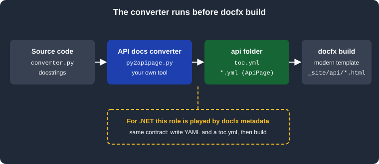

Additional Languages
|
This content was generated with the assistance of AI and should be verified against the official documentation before being relied on in production. |
This page was written against DocFX 2.81.0 (the latest release, published 2026-09-25) and checked on 2026-10-26. DocFX
reads .NET code and Swagger 2.0 files itself; for any other language you write a small converter that produces files
DocFX can build. The example is a Python converter for the Pocket Units library, run together with docfx build in the
mcr.microsoft.com/dotnet/sdk:10.0 Docker image (SDK 10.0.403), and the listings show the real output.
What an API docs converter is, and why you need one
DocFX natively generates reference documentation for .NET and for REST APIs. It has no parser for Python, Java,
TypeScript, Go or any other language. The official documentation’s answer is an API docs converter: any tool that runs
before DocFX and writes files the DocFX build understands. The docfx metadata command for .NET is described as one
instance of such a converter, so a custom converter does for your language what metadata does for C#.
The contract is deliberately small. A converter writes a folder that contains:
-
A
toc.ymlthat holds the hierarchy shown in the table of contents. Its structure is the one described in Table of Contents. -
A set of YAML files that follow the API Page data structure, one file for each page. The path of a generated file corresponds to the URL used to reach the page.
DocFX does not care which language the converter is written in or how it finds the information. Parsing source code, reading a documentation tool’s JSON dump (for example a compiler or doc-extractor output) or calling a language server are all fine, as long as the output files are valid. The wider pipeline, where the converter takes the place of the metadata stage, is described in Basic Concepts and Pipeline.

The files the converter must produce
The official example uses this layout, where api is the output directory of the custom converter:
docfx.json
api/
toc.yml
api-page-1.yml
api-page-2.ymlSource: DocFX docs: Additional Languages
To build the output, the converter folder is added to build.content in docfx.json. The metadata section is not
used at all, because nothing needs to be extracted from .NET code:
{
"build": {
"content": [
{ "files": ["api/**/*.yml", "toc.yml", "index.md"] }
],
"output": "_site",
"template": ["default", "modern"]
}
}Source: DocFX docs: Additional Languages
The glob api/**/*.yml picks up the page files and also the api/toc.yml. A root toc.yml next to docfx.json links
to the generated folder, as for any other TOC (href: api/ makes the first entry of api/toc.yml the landing page of
that menu item). The docfx.json keys are explained in docfx.json.
The API Page format
An API page is a YAML file that describes a general API page as a list of typed blocks. The first line of the file must
be #YamlMime:ApiPage; the rest follows this structure:
-
title(required): the page title. -
body(required): a list of blocks. -
languageId(optional): the default code language identifier for code blocks, using the identifiers known to Visual Studio Code. -
metadata(optional): opaque key and value pairs written to the page as HTMLmetatags.
The body blocks are:
| Block | Meaning |
|---|---|
|
A Markdown string. |
|
Code text, with an optional |
|
A heading, with an optional |
|
An API heading with an optional |
|
A sheet of |
|
A list of inline items. |
|
One inheritance chain from base type to derived type, as a list of inline items. |
|
A list of parameters, each with optional |
Source: DocFX docs: API Page
An inline is a plain string, a link written as text plus an optional url, or a list that mixes both. Facts, lists,
inheritance chains and the type of a parameter use inlines, which is how a page links to another one.
The documented schema has no uid property. API Page files therefore are not the target of the <xref:uid> links
described in Links and Cross References; a converter links
pages with url values, as the example below does.
A converter for Pocket Units in Python
The Python half of Pocket Units has one module, pocket_units/converter.py, with an enum and a function documented in
Google-style docstrings. The converter below reads the package with the standard library ast module, so it needs no
dependencies and runs on any Python 3.9 or later (it was run with Python 3.9). For each module it writes a module page,
one page for each class and one for each public function, then a toc.yml.
"""Convert the docstrings of a Python package into DocFX API Page YAML and a toc.yml.
Usage: python3 py2apipage.py <package-dir> <output-dir>
Only the standard library is used.
"""
import ast
import json
import re
import sys
from pathlib import Path
SECTIONS = ("Args", "Returns", "Raises", "Example")
def scalar(value):
# JSON strings and numbers are valid YAML scalars.
return json.dumps(value, ensure_ascii=False)
def emit(node, indent=0):
"""Emit lists of dicts and dicts as block-style YAML."""
pad = " " * indent
lines = []
if isinstance(node, dict):
for key, value in node.items():
if isinstance(value, (dict, list)) and value:
lines.append(f"{pad}{key}:")
lines.extend(emit(value, indent + (0 if isinstance(value, list) else 2)))
else:
lines.append(f"{pad}{key}: {scalar(value)}")
else:
for item in node:
if isinstance(item, dict):
inner = emit(item, indent + 2)
inner[0] = f"{pad}- " + inner[0].lstrip()
lines.extend(inner)
else:
lines.append(f"{pad}- {scalar(item)}")
return lines
def to_markdown(text):
"""Turn reStructuredText inline roles and double backticks into Markdown code spans."""
text = re.sub(r":\w+:`~?([^`]+)`", r"`\1`", text)
return re.sub(r"``([^`]+)``", r"`\1`", text)
def parse_docstring(doc):
"""Split a Google-style docstring into summary, description and sections."""
doc = ast.get_docstring(doc, clean=True) if not isinstance(doc, str) else doc
parts = {"summary": "", "description": "", "sections": {}}
if not doc:
return parts
current = None
free = []
for line in doc.splitlines():
header = line.rstrip(":")
if line.endswith(":") and header in SECTIONS and not line.startswith(" "):
current = header
parts["sections"][current] = []
elif current:
parts["sections"][current].append(line)
else:
free.append(line)
text = "\n".join(free).strip()
summary, _, rest = text.partition("\n\n")
parts["summary"] = to_markdown(summary.replace("\n", " "))
parts["description"] = to_markdown(rest.strip())
return parts
def name_value(lines):
"""Turn 'name: text' lines of an Args or Raises section into pairs."""
pairs = []
for line in lines:
match = re.match(r"^\s{4}(\w+): (.*)$", line)
if match:
pairs.append([match.group(1), to_markdown(match.group(2))])
elif line.strip() and pairs:
pairs[-1][1] += " " + line.strip()
return pairs
def dedent(lines):
return "\n".join(line[4:] if line.startswith(" ") else line for line in lines).strip()
def signature(func):
args = []
defaults = [None] * (len(func.args.args) - len(func.args.defaults)) + list(func.args.defaults)
for arg, default in zip(func.args.args, defaults):
text = arg.arg
if arg.annotation is not None:
text += ": " + ast.unparse(arg.annotation)
if default is not None:
text += " = " + ast.unparse(default)
args.append(text)
result = f"def {func.name}({', '.join(args)})"
if func.returns is not None:
result += " -> " + ast.unparse(func.returns)
return result
def function_blocks(func, level):
doc = parse_docstring(func)
sec = doc["sections"]
blocks = [{f"api{level}": f"{func.name}()", "id": func.name}]
blocks.append({"code": signature(func), "languageId": "python"})
if doc["summary"]:
blocks.append({"markdown": doc["summary"]})
if doc["description"]:
blocks.append({"markdown": doc["description"]})
if "Args" in sec:
blocks.append({f"h{level + 1}": "Parameters"})
params = []
for name, text in name_value(sec["Args"]):
arg = next((a for a in func.args.args if a.arg == name), None)
param = {"name": name}
if arg is not None and arg.annotation is not None:
param["type"] = ast.unparse(arg.annotation)
param["description"] = text
params.append(param)
blocks.append({"parameters": params})
if "Returns" in sec:
blocks.append({f"h{level + 1}": "Returns"})
blocks.append({"markdown": dedent(sec["Returns"])})
if "Raises" in sec:
blocks.append({f"h{level + 1}": "Exceptions"})
blocks.append({"parameters": [{"name": n, "description": t} for n, t in name_value(sec["Raises"])]})
if "Example" in sec:
blocks.append({f"h{level + 1}": "Example"})
blocks.append({"code": dedent(sec["Example"]), "languageId": "python"})
return blocks
def class_page(cls, module):
doc = parse_docstring(cls)
is_enum = any(ast.unparse(b) == "Enum" for b in cls.bases)
page_uid = f"{module}.{cls.name}"
body = [{"h1": f"{cls.name} {'enum' if is_enum else 'class'}"}]
body.append({"facts": [{"name": "Module", "value": [{"text": module, "url": f"{module}.html"}]},
{"name": "Bases", "value": ", ".join(ast.unparse(b) for b in cls.bases) or "object"}]})
body.append({"code": f"class {cls.name}({', '.join(ast.unparse(b) for b in cls.bases)})", "languageId": "python"})
if doc["summary"]:
body.append({"markdown": doc["summary"]})
members = [n for n in cls.body if isinstance(n, ast.Assign)]
if is_enum and members:
body.append({"h2": "Members"})
body.append({"parameters": [
{"name": m.targets[0].id, "type": "float", "default": ast.unparse(m.value)}
for m in members]})
for method in (n for n in cls.body if isinstance(n, ast.FunctionDef) and not n.name.startswith("_")):
body.extend(function_blocks(method, 2))
return page_uid, {"title": page_uid, "languageId": "python", "body": body}
def module_page(path, module):
tree = ast.parse(path.read_text(encoding="utf-8"))
summary = parse_docstring(ast.get_docstring(tree) or "")["summary"]
pages, toc = {}, []
body = [{"h1": f"{module} module"}, {"markdown": summary}]
exported = []
for node in tree.body:
if isinstance(node, ast.ClassDef):
uid, page = class_page(node, module)
pages[uid] = page
toc.append({"name": node.name, "href": f"{uid}.yml"})
exported.append({"text": node.name, "url": f"{uid}.html"})
elif isinstance(node, ast.FunctionDef) and not node.name.startswith("_"):
uid = f"{module}.{node.name}"
pages[uid] = {"title": uid, "languageId": "python", "body": function_blocks(node, 1)}
toc.append({"name": node.name + "()", "href": f"{uid}.yml"})
exported.append({"text": node.name + "()", "url": f"{uid}.html"})
body.append({"h2": "Contents"})
body.append({"list": exported})
pages[module] = {"title": module, "languageId": "python", "body": body}
return pages, toc
def main(package_dir, out_dir):
package = Path(package_dir)
out = Path(out_dir)
out.mkdir(parents=True, exist_ok=True)
root = package.name
all_pages, items = {}, []
for path in sorted(package.glob("*.py")):
if path.name == "__init__.py":
continue
module = f"{root}.{path.stem}"
pages, toc = module_page(path, module)
all_pages.update(pages)
items.append({"name": module, "href": f"{module}.yml", "items": toc})
for uid, page in all_pages.items():
text = "#YamlMime:ApiPage\n" + "\n".join(emit(page)) + "\n"
(out / f"{uid}.yml").write_text(text, encoding="utf-8")
toc_text = "### YamlMime:TableOfContent\n" + "\n".join(emit(items)) + "\n"
(out / "toc.yml").write_text(toc_text, encoding="utf-8")
print(f"wrote {len(all_pages)} pages and toc.yml to {out}")
if __name__ == "__main__":
main(sys.argv[1], sys.argv[2])Source: DocFX docs: API Page
A few design points are worth copying into your own converter:
-
The page file name is the fully qualified name (
pocket_units.converter.convert.yml), so the URL of a page is predictable and two pages cannot collide. -
JSON strings and numbers are valid YAML scalars, so the small emitter quotes every scalar with
json.dumpsand never has to worry about YAML escaping of colons, quotes or line breaks inside docstrings. A library such as PyYAML would work equally well. -
Docstring text is turned into Markdown, because
markdownblocks and parameter descriptions are rendered as Markdown. Here the reStructuredText roles and double backticks used in the Pocket Units docstrings become single backtick code spans. -
Parameters and exceptions both use the
parametersblock, since the format has no dedicated block for exceptions.
Running the converter and the build
The converter runs first, then DocFX. The root toc.yml and index.md are ordinary hand-written files:
- name: Home
href: index.md
- name: Python API
href: api/Source: DocFX docs: Table of Contents
python3 converter/py2apipage.py pocket_units api
docker run --rm -v "$PWD":/w -w /w mcr.microsoft.com/dotnet/sdk:10.0 bash -c \
'dotnet tool install -g docfx --version 2.81.0 && export PATH=$PATH:/root/.dotnet/tools \
&& docfx build docfx.json'Source: DocFX docs: Additional Languages
The converter printed wrote 3 pages and toc.yml to api, and the build used the API Page processor for the three pages:
Building 3 file(s) in ApiPageDocumentProcessor()...
Building 1 file(s) in ConceptualDocumentProcessor(BuildConceptualDocument=>ValidateConceptualDocumentMetadata)...
Building 2 file(s) in TocDocumentProcessor(BuildTocDocument)...
Applying templates to 6 model(s)...
XRef map exported.
Build succeeded.
0 warning(s)
0 error(s)The generated files
The function page written for convert (a top-level function uses an api1 heading, which gives the page its h1
element with the id from the file):
#YamlMime:ApiPage
title: "pocket_units.converter.convert"
languageId: "python"
body:
- api1: "convert()"
id: "convert"
- code: "def convert(value: float, from_unit: LengthUnit, to_unit: LengthUnit) -> float"
languageId: "python"
- markdown: "Convert a length between two units."
- h2: "Parameters"
- parameters:
- name: "value"
type: "float"
description: "The magnitude to convert."
- name: "from_unit"
type: "LengthUnit"
description: "The unit of `value`."
- name: "to_unit"
type: "LengthUnit"
description: "The target unit."
- h2: "Returns"
- markdown: "The converted magnitude."
- h2: "Exceptions"
- parameters:
- name: "TypeError"
description: "If a unit is not a `LengthUnit`."
- h2: "Example"
- code: ">>> round(convert(10, LengthUnit.KILOMETRE, LengthUnit.MILE), 3)\n6.214"
languageId: "python"The enum page uses facts for the module and the base class, and parameters for the members with their defaults:
#YamlMime:ApiPage
title: "pocket_units.converter.LengthUnit"
languageId: "python"
body:
- h1: "LengthUnit enum"
- facts:
- name: "Module"
value:
- text: "pocket_units.converter"
url: "pocket_units.converter.html"
- name: "Bases"
value: "Enum"
- code: "class LengthUnit(Enum)"
languageId: "python"
- markdown: "Length units supported by `convert`."
- h2: "Members"
- parameters:
- name: "METRE"
type: "float"
default: "1.0"
- name: "KILOMETRE"
type: "float"
default: "1000.0"
- name: "FOOT"
type: "float"
default: "0.3048"
- name: "MILE"
type: "float"
default: "1609.344"The module page lists its contents with links (url), which is how pages point at each other:
#YamlMime:ApiPage
title: "pocket_units.converter"
languageId: "python"
body:
- h1: "pocket_units.converter module"
- markdown: "Conversion between length units."
- h2: "Contents"
- list:
- text: "LengthUnit"
url: "pocket_units.converter.LengthUnit.html"
- text: "convert()"
url: "pocket_units.converter.convert.html"And the generated api/toc.yml, in which each child entry is a page file:
### YamlMime:TableOfContent
- name: "pocket_units.converter"
href: "pocket_units.converter.yml"
items:
- name: "LengthUnit"
href: "pocket_units.converter.LengthUnit.yml"
- name: "convert()"
href: "pocket_units.converter.convert.yml"The build wrote pocket_units.converter.html, pocket_units.converter.LengthUnit.html and
pocket_units.converter.convert.html into _site/api, each file name matching the YAML file name. In the rendered
function page the visible text was the convert() heading, the def convert(...) signature, the summary, then the
Parameters, Returns, Exceptions and Example sections with the docstring text, and the enum page listed the four members
with their default values. The href: api/ entry in the root TOC resolved to
api/pocket_units.converter.html, with the sidebar taken from api/toc.html. The pages were generated and inspected as
HTML text; they were not opened in a browser.
Choosing the template
API Page files are rendered by the modern template. When the build was run with only the default template, it still
finished, but with the warning UnknownContentTypeForTemplate: There is no template processing document type(s):
ApiPage and no page was written for the YAML files. Keep the template list as default plus modern, or modern alone, in
docfx.json; see Templates and Customization.
What happens when the output is wrong
The converter owns the validity of its files, and DocFX reports problems when it loads them. Each case below was produced on purpose by editing one generated page.
| Mistake | Result of the build |
|---|---|
|
|
A block with an unknown key ( |
|
The |
The file is not handed to the API Page processor and no page is written. The build succeeds with the warning
|
The last row is the quiet one: the build is green apart from a warning about the TOC link, so run builds with
--warningsAsErrors in continuous integration. The option is described in
CLI.
Alternatives to API Page
API Page is the richest target, but it is not the only one. The docfx metadata command can itself write CommonMark
files with outputFormat: markdown, and the files listed in build.content then include *.md as well as the YAML.
A converter for a language with simple needs can do the same: write one Markdown file for each module or class and a
toc.yml, and DocFX builds them as conceptual documents (see Markdown).
You lose the structured blocks (facts, parameters) but gain full control over the text. If the language already has a
documentation tool, the other route is to publish its HTML separately and link to it from a DocFX site.
Pitfalls and version notes
-
Run the converter before
docfx build, in every environment. DocFX does not call it; a missing step shows up as stale pages or a TOC warning, not as an error. -
A converter output folder is generated: add it to
.gitignoreunless you commit generated documentation on purpose. -
The file name is the URL, so keep names deterministic. Sort the input (the example sorts files) so the output does not change between runs.
-
Without a
uid, API Page files do not take part inxrefresolution; internal links go through relativeurlvalues that end in.html. -
The official page describes the contract only; it ships no converters. The converter above is a minimal example, not a full Python documentation generator: it ignores class attributes other than enum members, nested classes, decorators, type aliases and inheritance chains (the
inheritanceblock exists for those). -
Pin the DocFX version in the build (
dotnet tool install -g docfx --version 2.81.0) and run the converter output through the build again when you upgrade.